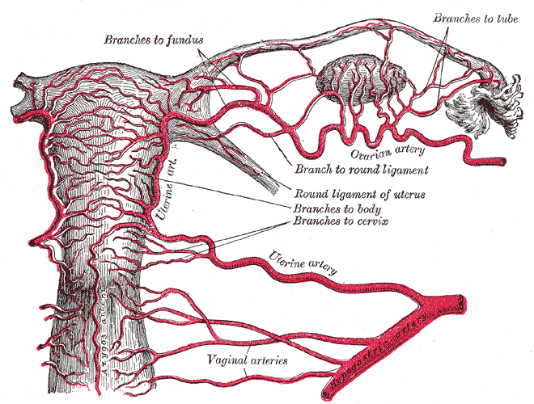

Parte D · Banca — duas histerectomias para fechar o mapa
Pegadinha — quatro frases, uma sobrevive
Histerectomia: quatro afirmações, uma correta
Quatro frases sobre anatomia na histerectomia. Só uma sobrevive. As outras três são armadilhas que reaparecem o tempo todo.
ObstetríciaParte D · BancaItens 115–126, 147Pegadinha
Tópico 1
A pergunta da banca sobre histerectomia
Paciente submetida a histerectomia; pede-se a afirmação correta sobre aspectos anatômicos do procedimento. (Sem paciente inventada além do enunciado de prova; sem carimbo falso de banca.)
A · Errada
A artéria epigástrica inferior, por estar próxima à borda lateral do reto abdominal, dificilmente é lesada em incisões laparoscópicas.
Cai porque: a epigástrica inferior é fácil de lesar; na passagem de trocateres é preciso cuidado para não perfurá-la.
B · Correta (gabarito)
A artéria uterina cruza superiormente o ureter, de lateral para medial, e chega ao útero na altura do orifício interno do colo uterino.
Isso formaliza a relação ponte/rio: uterina por cima, ureter por baixo, no caminho medial ao útero — a mesma topografia do mnemônico, agora em linguagem de prova.
C · Errada
O ureter entraria na pelve posterior à bifurcação.
Correção: o ureter passa de forma anterior à bifurcação da artéria ilíaca comum.
D · Errada
Os ovários estariam aderidos ao útero “pelas tubas” e, por isso, na retirada do útero, a ligadura dos infundíbulos pélvicos seria necessária nessa lógica.
Por que cai: os ovários não se fixam ao útero “pelas tubas”. A fixação relevante distingue útero-ovário (avascular) e infundíbulo pélvico (vascular).
Tópico 2
Regra operacional: afastar o ureter
Gabarito: B. Em qualquer questão de artéria uterina × ureter: afastar/individualizar o ureter para evitar lesão inadvertida.
Cruzamento uterina × ureter no orifício internoIlustração autoral da página; complementa o texto soberano.Esquema autoral

Artéria uterina no parâmetro (prancha Gray 1170)
Atlas arterial feminino: uterina no território parametrial — ponto de risco ao ureter.
Plate 1170 from Gray's Anatomy (20th ed., 1918), by Henry Vandyke Carter. Public domain. Source: https://commons.wikimedia.org/wiki/File:Gray1170.png
Quiz — fixação
Afirmação correta típica sobre a uterina na histerectomia:
Gabarito B.É a formalização do rio/ponte: uterina por cima, lateral→medial, na altura do orifício interno do colo.
(A)inverte a relação — o ureter é que passa abaixo da uterina.
(C)o ureter entra anterior (não posterior) à bifurcação.
(D)a epigástrica inferior é fácil de lesar em trocater.
Por que cair em A:“longe do colo” soa seguro, mas inverte a relação ponte/rio.
A entrada pélvica do ureter, no padrão cobrado, é:
Gabarito B.O ureter cruza anterior à artéria ilíaca comum ao entrar na pelve.
(A)posterior é exatamente o erro que a alternativa C da banca explora.
(C)o ureter não atravessa o colo; passa lateral a ele, no paramétrio.
(D)canal inguinal é da parede anterior — nada a ver com o ureter.
Por que cair em A:“trás” parece mais protegido para um tubo que desce — é o oposto do padrão.